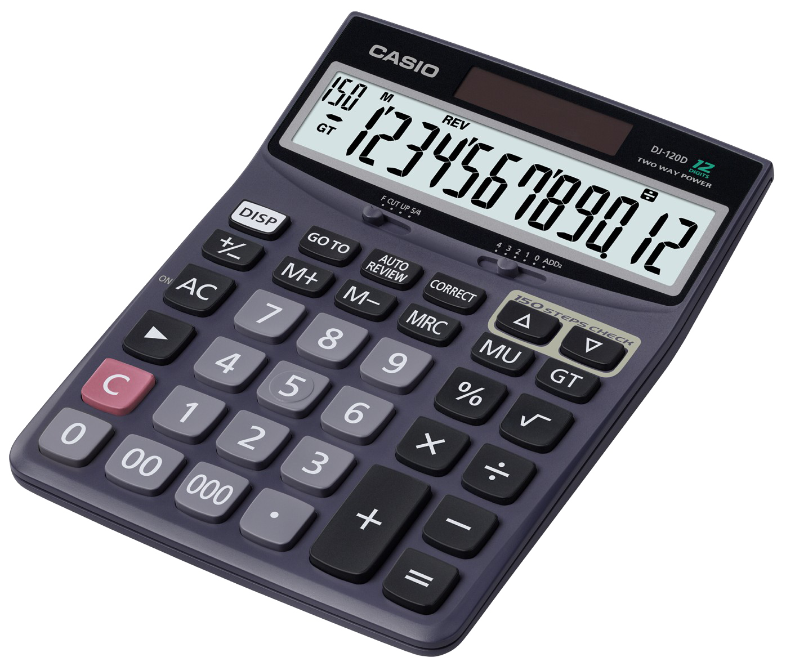
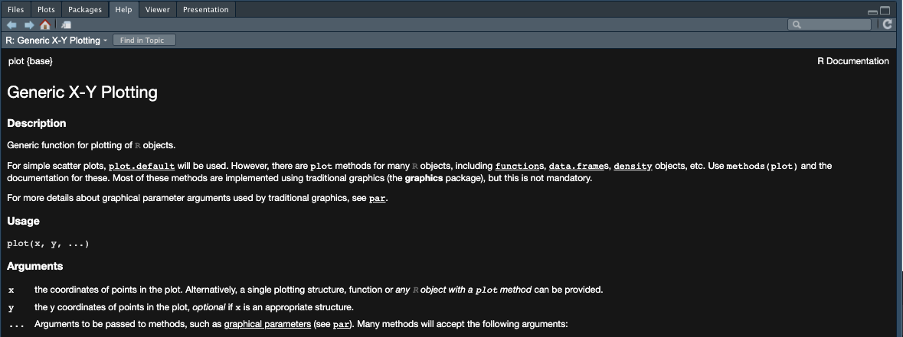
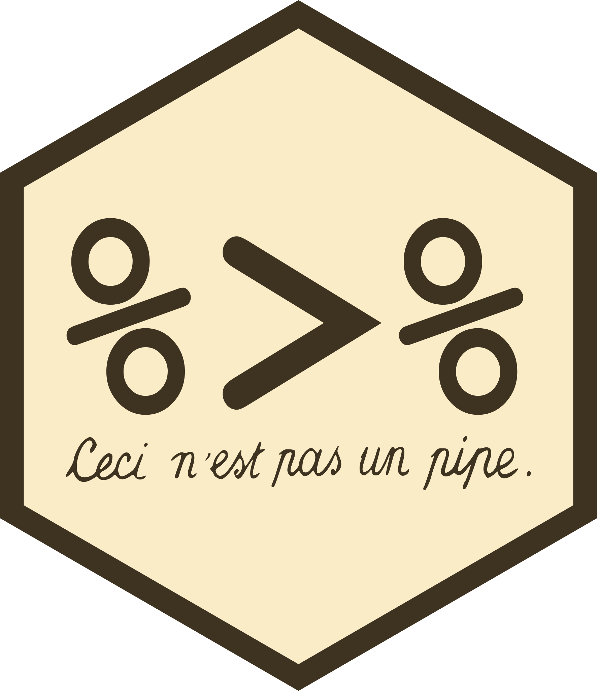

# You can keep track of all the data analysis steps
2 + 2 + 3 # step 1[1] 7log(2 + 2 + 3) # step 2[1] 1.94591Marine Ecosystem Dynamics


R syntaxR studio softwarereadr package# You can keep track of all the data analysis steps
2 + 2 + 3 # step 1[1] 7log(2 + 2 + 3) # step 2[1] 1.94591# This can be scary
library(ggplot2) ; library(dplyr) ; set.seed(123)
tibble(Month = sample(month.abb, 100, replace = TRUE),
Genus = sample(c("Acartia", "Temora", "Centropages", "Pseudocalanus"), 100, replace = T),
Abundance = rnorm(100,12,7)) |>
group_by(Month, Genus) |>
summarise(Avg_abundance = mean(Abundance, na.rm = T)) |>
ggplot(aes(x = Genus, y = Avg_abundance)) +
geom_boxplot()This means that people have worked on it and created tools and functions that everyone can use !
plot(), +, -, sin()ggplot(), select(), …library()install.packages("PackageName")
library(PackageName)2 + 2[1] 43 * 4[1] 12(5 + 2) * (4 - 1)[1] 21sin(60)[1] -0.3048106log(10)[1] 2.302585
Variables in R can be of several types :
TRUE or FALSE3.1 or 4Example. . .
variable_4 <- variable_5 <- variable_6 <- "Value"function_name(argument1, ...)? before the function?plot()
my_addition(parameter_1 = 1, parameter_2 = 2) == 1 + 2[1] TRUE==!=[1] 1 3 6[1] 2 5 8[1] "Yellow" "Yellow" "Yellow"[1] 1 3 6 2 5 8readr packagesread_* where * can be:
csv - comma-separated valuestsv - tab-separated valuescsv2 - semicolon-separated values with , as the decimal markdelim - delimited files
Warning: package 'readr' was built under R version 4.1.2Rows: 100 Columns: 3
── Column specification ────────────────────────────────────────────────────────
Delimiter: ","
chr (2): Month, Genus
dbl (1): Abundance
ℹ Use `spec()` to retrieve the full column specification for this data.
ℹ Specify the column types or set `show_col_types = FALSE` to quiet this message.# A tibble: 6 × 3
Month Genus Abundance
<chr> <chr> <dbl>
1 Dec Centropages -0.552
2 Apr Centropages 12.5
3 Feb Centropages 18.4
4 Sep Acartia 25.6
5 Mar Pseudocalanus 9.70
6 Jul Temora 8.90 . . .
tail(Example_1)# A tibble: 6 × 3
Month Genus Abundance
<chr> <chr> <dbl>
1 Jan Pseudocalanus 22.7
2 Feb Acartia 27.6
3 Aug Acartia 7.75
4 Jan Centropages 17.0
5 Feb Centropages 5.95
6 Aug Temora 17.2 



tidyversemagrittrtidyrdplyrggplot2If you have an issue with something, you are probably not the first and someone asked a solution on a forum !